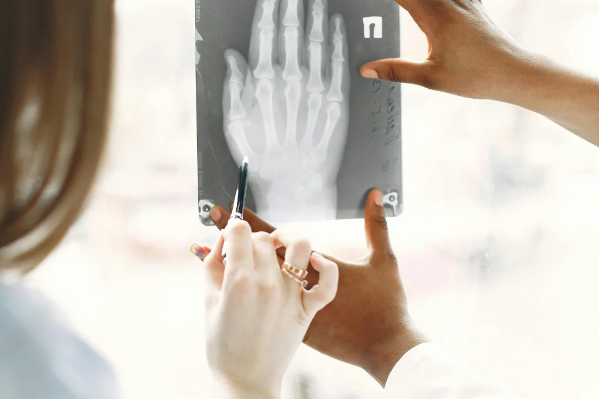

Harmonização Facial
A harmonização facial é um conjunto de procedimentos estéticos minimamente invasivos que visam realçar a beleza natural do rosto, equilibrando proporções e suavizando marcas de expressão.
Ácido Hialurônico
Preenchimento de lábios, olheiras e sulcos nasogenianos para volume e hidratação.
Toxina Botulínica (Botox)
Suavização de rugas dinâmicas e linhas de expressão na testa, glabela e pés de galinha.
Bioestimuladores
Estimulação de colágeno para melhora da flacidez facial e corporal.
Skinbooster
Hidratação profunda e revitalização da pele com ácido hialurônico de baixa densidade.

Modelagem Corporal
Tecnologias avançadas para redução de medidas, celulite e flacidez, com protocolos personalizados para cada biotipo e objetivo.
Criolipólise
Redução de gordura localizada através do resfriamento controlado das células adiposas.
Radiofrequência
Aquecimento controlado para produção de colágeno e melhora da flacidez.
Lipocavitação
Ultrassom de baixa frequência para quebra das células de gordura.
Drenagem Linfática
Técnica manual para eliminação de líquidos e toxinas, reduzindo inchaço.

Skin Care
Tratamentos personalizados para cada tipo de pele, com produtos de alta performance e tecnologias avançadas para rejuvenescimento e saúde cutânea.
Limpeza de Pele
Remoção de impurezas, cravos e células mortas para uma pele mais saudável.
Peeling Químico
Renovação celular com ácidos para tratamento de manchas e rejuvenescimento.
Tratamento de Manchas
Protocolos específicos para clareamento de melasma e manchas solares.
Hidratação Profunda
Reposição de água e lipídios para peles ressecadas e desidratadas.

Depilação a Laser
Tecnologia de última geração para remoção definitiva dos pelos com segurança, conforto e resultados duradouros para todos os fototipos de pele.
Área Facial
Buço, costeletas, queixo e laterais do rosto com total segurança.
Axilas e Braços
Remoção definitiva dos pelos com rapidez e eficácia.
Pernas e Virilha
Tratamento completo para pernas inteiras, meia perna e virilha.
Área Íntima
Depilação masculina e feminina com protocolos específicos.

Massagens Terapêuticas
Técnicas milenares combinadas com abordagens modernas para alívio do estresse, relaxamento muscular e bem-estar integral.
Massagem Relaxante
Movimentos suaves para alívio do estresse e tensão do dia a dia.
Drenagem Linfática
Técnica para eliminação de líquidos e redução de inchaço.
Massagem Modeladora
Movimentos intensos para quebra de gordura localizada.
Quick Massage
Sessões rápidas de 15-20 minutos para alívio imediato de tensões.

Harmonização Facial
Procedimentos minimamente invasivos para realçar sua beleza natural com ácido hialurônico, botox e bioestimuladores.
Saiba Mais
Modelagem Corporal
Tecnologias avançadas para redução de medidas, celulite e flacidez com criolipólise, radiofrequência e lipocavitação.
Saiba Mais
Skin Care
Tratamentos personalizados para todos os tipos de pele com limpeza profunda, peeling químico e hidratação intensiva.
Saiba Mais
Depilação a Laser
Remoção definitiva dos pelos com tecnologia de ponta, segura para todos os fototipos de pele e áreas do corpo.
Saiba Mais
Massagens Terapêuticas
Técnicas especializadas para alívio do estresse, relaxamento muscular e bem-estar, com opções de quick massage e drenagem linfática.
Saiba Mais
Pós-operatório
Protocolos específicos para auxiliar na recuperação de cirurgias plásticas, minimizando desconfortos e otimizando resultados.
Saiba Mais